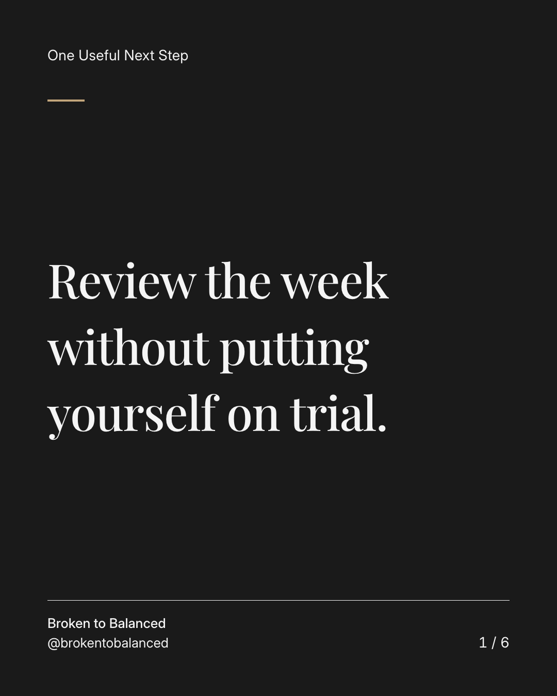
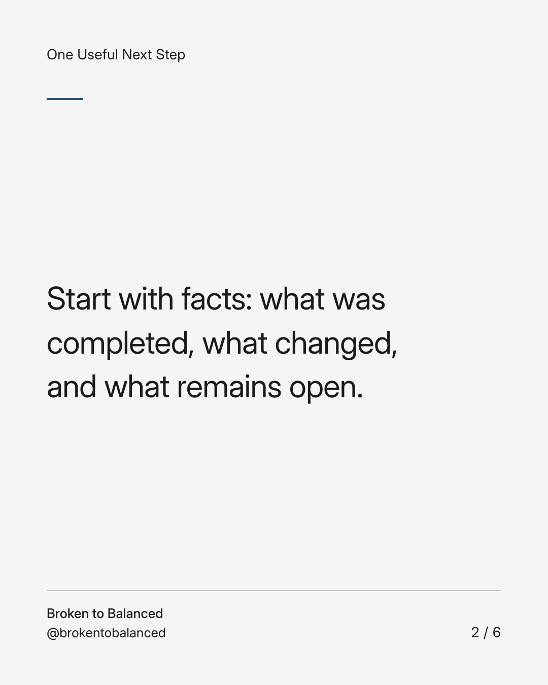
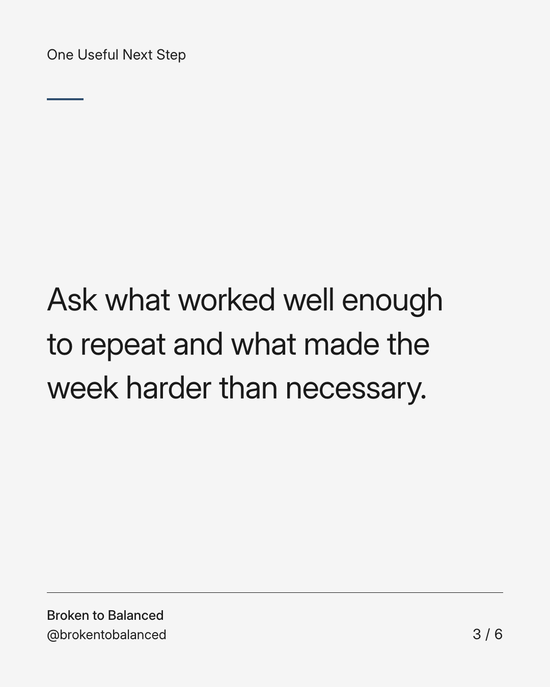
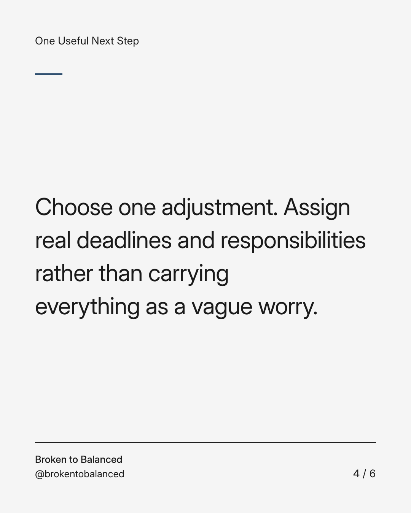
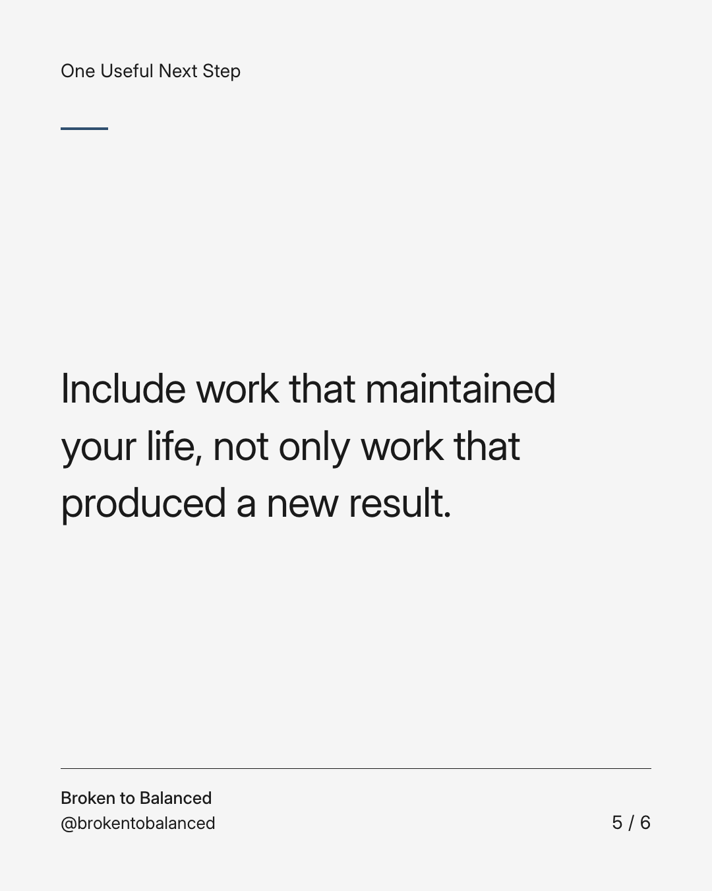
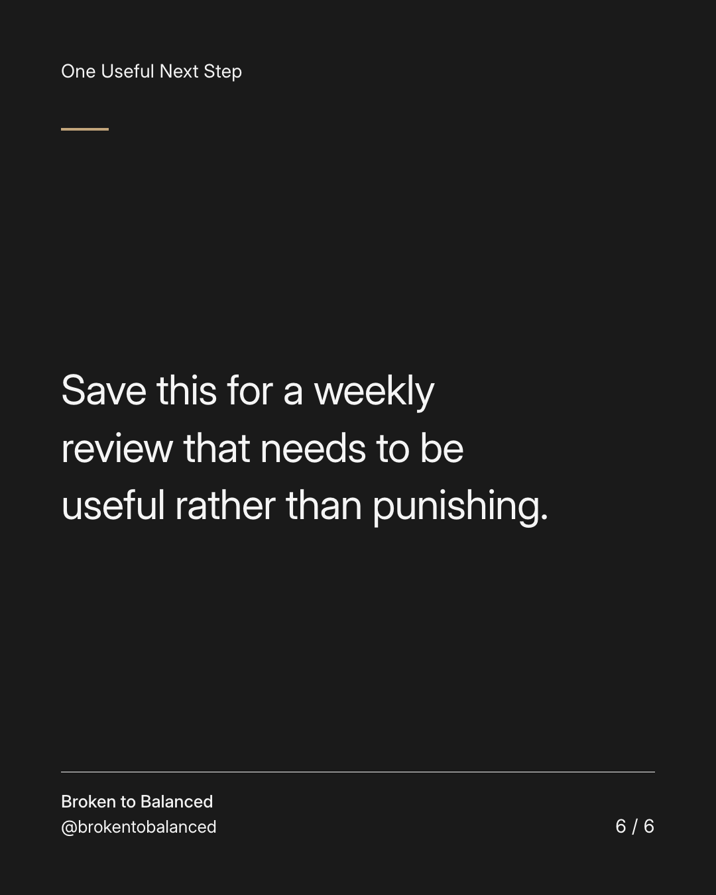

Exact text and accessibility text
Review the week without putting yourself on trial.
Slide 1 of 6. Review the week without putting yourself on trial.


Exact text and accessibility text
Start with facts: what was completed, what changed, and what remains open.
Slide 2 of 6. Start with facts: what was completed, what changed, and what remains open.


Exact text and accessibility text
Ask what worked well enough to repeat and what made the week harder than necessary.
Slide 3 of 6. Ask what worked well enough to repeat and what made the week harder than necessary.


Exact text and accessibility text
Choose one adjustment. Assign real deadlines and responsibilities rather than carrying everything as a vague worry.
Slide 4 of 6. Choose one adjustment. Assign real deadlines and responsibilities rather than carrying everything as a vague worry.


Exact text and accessibility text
Include work that maintained your life, not only work that produced a new result.
Slide 5 of 6. Include work that maintained your life, not only work that produced a new result.


Exact text and accessibility text
Save this for a weekly review that needs to be useful rather than punishing.
Slide 6 of 6. Save this for a weekly review that needs to be useful rather than punishing.
Exact caption
Plain-text fallback: select and copy the caption.